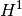

<!DOCTYPE html PUBLIC "-//W3C//DTD XHTML 1.0 Transitional//EN"
  "http://www.w3.org/TR/xhtml1/DTD/xhtml1-transitional.dtd">


<html xmlns="http://www.w3.org/1999/xhtml">
  <head>
    <meta http-equiv="Content-Type" content="text/html; charset=utf-8" />
    
    <title>GetFEM++ Documentation contents &mdash; GetFEM++</title>
    
    <link rel="stylesheet" href="_static/getfem.css" type="text/css" />
    <link rel="stylesheet" href="_static/pygments.css" type="text/css" />
    
    <script type="text/javascript">
      var DOCUMENTATION_OPTIONS = {
        URL_ROOT:    './',
        VERSION:     '5.3',
        COLLAPSE_INDEX: false,
        FILE_SUFFIX: '.html',
        HAS_SOURCE:  false
      };
    </script>
    <script type="text/javascript" src="_static/jquery.js"></script>
    <script type="text/javascript" src="_static/underscore.js"></script>
    <script type="text/javascript" src="_static/doctools.js"></script>
    <script type="text/javascript" src="_static/translations.js"></script>
    <link rel="shortcut icon" href="_static/favicon.ico"/>
    <link rel="author" title="このドキュメントについて" href="about.html" />
    <link rel="copyright" title="著作権" href="copyright.html" />
    <link rel="top" title="GetFEM++" href="index.html" />
    <link rel="next" title="ユーザドキュメント" href="userdoc/index.html" />
    <link rel="shortcut icon" type="image/png" href="_static/icon.png" />
 

  </head>
  <body>
    <div class="related">
      <h3>ナビゲーション</h3>
      <ul>
        <li class="right" style="margin-right: 10px">
          <a href="genindex.html" title="総合索引"
             accesskey="I">索引</a></li>
        <li class="right" >
          <a href="userdoc/index.html" title="ユーザドキュメント"
             accesskey="N">次へ</a> |</li>
        <li><a href="https://savannah.nongnu.org/projects/getfem" </li></a>
        <li><a href="index.html">GetFEM++</a> &raquo;</li>
 
      </ul>
    </div>  

    <div class="document">
      <div class="documentwrapper">
        <div class="bodywrapper">
          <div class="body">
            
  <div class="section" id="getfem-documentation-contents">
<h1>GetFEM++ Documentation contents<a class="headerlink" href="#getfem-documentation-contents" title="このヘッドラインへのパーマリンク">¶</a></h1>
<div class="toctree-wrapper compound">
<ul>
<li class="toctree-l1"><a class="reference internal" href="userdoc/index.html">ユーザドキュメント</a><ul>
<li class="toctree-l2"><a class="reference internal" href="userdoc/intro.html">イントロダクション</a></li>
<li class="toctree-l2"><a class="reference internal" href="userdoc/install.html">インストール方法</a></li>
<li class="toctree-l2"><a class="reference internal" href="userdoc/linalg.html">線形代数プロセス</a></li>
<li class="toctree-l2"><a class="reference internal" href="userdoc/parallel.html"><em>GetFEM++</em> のMPI並列化</a><ul>
<li class="toctree-l3"><a class="reference internal" href="userdoc/parallel.html#state-of-progress-of-gf-mpi-parallelization"><em>GetFEM++</em> MPIの並列化の進捗状況</a></li>
</ul>
</li>
<li class="toctree-l2"><a class="reference internal" href="userdoc/catch.html">キャッチエラー</a></li>
<li class="toctree-l2"><a class="reference internal" href="userdoc/bmesh.html">メッシュ生成</a><ul>
<li class="toctree-l3"><a class="reference internal" href="userdoc/bmesh.html#add-an-element-to-a-mesh">メッシュに要素を追加する</a></li>
<li class="toctree-l3"><a class="reference internal" href="userdoc/bmesh.html#remove-an-element-from-a-mesh">メッシュから要素を削除する</a></li>
<li class="toctree-l3"><a class="reference internal" href="userdoc/bmesh.html#simple-structured-meshes">シンプルな構造化メッシュ</a></li>
<li class="toctree-l3"><a class="reference internal" href="userdoc/bmesh.html#mesh-regions">メッシュ領域</a></li>
<li class="toctree-l3"><a class="reference internal" href="userdoc/bmesh.html#methods-of-the-gf-m-object"><tt class="docutils literal"><span class="pre">getfem::mesh</span></tt> オブジェクトのメソッド</a></li>
<li class="toctree-l3"><a class="reference internal" href="userdoc/bmesh.html#using-dal-bv"><tt class="docutils literal"><span class="pre">dal::bit_vector</span></tt> を使います</a></li>
<li class="toctree-l3"><a class="reference internal" href="userdoc/bmesh.html#face-numbering">面番号</a></li>
<li class="toctree-l3"><a class="reference internal" href="userdoc/bmesh.html#save-and-load-meshes">メッシュの保存とロード</a></li>
</ul>
</li>
<li class="toctree-l2"><a class="reference internal" href="userdoc/bfem.html">メッシュ上に有限要素法を構築します</a><ul>
<li class="toctree-l3"><a class="reference internal" href="userdoc/bfem.html#first-level-manipulating-fems-on-each-elements">第1レベル：各要素の有限要素法の操作</a></li>
<li class="toctree-l3"><a class="reference internal" href="userdoc/bfem.html#examples">例</a></li>
<li class="toctree-l3"><a class="reference internal" href="userdoc/bfem.html#second-level-the-optional-vectorization-tensorization">第2レベル：オプションである「ベクトル化/テンソル化」</a></li>
<li class="toctree-l3"><a class="reference internal" href="userdoc/bfem.html#third-level-the-optional-linear-transformation-or-reduction">第3レベル：オプションである線形（または縮小）変換</a></li>
<li class="toctree-l3"><a class="reference internal" href="userdoc/bfem.html#obtaining-generic-mf-s">汎用的な <cite>mesh_fem</cite> の取得</a></li>
<li class="toctree-l3"><a class="reference internal" href="userdoc/bfem.html#the-partial-mesh-fem-object">partial_mesh_femオブジェクト</a></li>
</ul>
</li>
<li class="toctree-l2"><a class="reference internal" href="userdoc/binteg.html">積分法の選択</a><ul>
<li class="toctree-l3"><a class="reference internal" href="userdoc/binteg.html#methods-of-the-mim-object"><cite>mesh_im</cite> オブジェクトのメソッド</a></li>
</ul>
</li>
<li class="toctree-l2"><a class="reference internal" href="userdoc/rmesh.html">メッシュの改善</a></li>
<li class="toctree-l2"><a class="reference internal" href="userdoc/gasm_high.html">任意の項を計算する - 高水準の汎用的な構築手順 - 弱形式言語</a><ul>
<li class="toctree-l3"><a class="reference internal" href="userdoc/gasm_high.html#differences-in-execution-time-between-high-and-low-level-generic-assembly">高水準と低水準の汎用構築間の実行時間の差</a></li>
<li class="toctree-l3"><a class="reference internal" href="userdoc/gasm_high.html#overview-of-the-weak-form-language-syntax">弱形式言語構文の概要</a></li>
<li class="toctree-l3"><a class="reference internal" href="userdoc/gasm_high.html#some-basic-examples">いくつかの基本的な例</a></li>
<li class="toctree-l3"><a class="reference internal" href="userdoc/gasm_high.html#derivation-order-and-symbolic-differentiation">微分次数と記号による微分</a></li>
<li class="toctree-l3"><a class="reference internal" href="userdoc/gasm_high.html#c-call-of-the-assembly">構築のためのC ++呼び出し</a></li>
<li class="toctree-l3"><a class="reference internal" href="userdoc/gasm_high.html#c-assembly-examples">C ++構築の例</a></li>
<li class="toctree-l3"><a class="reference internal" href="userdoc/gasm_high.html#script-languages-call-of-the-assembly">構築言語のスクリプト言語からの呼び出し</a></li>
<li class="toctree-l3"><a class="reference internal" href="userdoc/gasm_high.html#the-tensors">テンソル</a></li>
<li class="toctree-l3"><a class="reference internal" href="userdoc/gasm_high.html#the-variables">変数</a></li>
<li class="toctree-l3"><a class="reference internal" href="userdoc/gasm_high.html#the-constants-or-data">定数またはデータ</a></li>
<li class="toctree-l3"><a class="reference internal" href="userdoc/gasm_high.html#test-functions">試行関数</a></li>
<li class="toctree-l3"><a class="reference internal" href="userdoc/gasm_high.html#gradient">勾配</a></li>
<li class="toctree-l3"><a class="reference internal" href="userdoc/gasm_high.html#hessian">Hessian</a></li>
<li class="toctree-l3"><a class="reference internal" href="userdoc/gasm_high.html#predefined-scalar-functions">定義済みのスカラー関数</a></li>
<li class="toctree-l3"><a class="reference internal" href="userdoc/gasm_high.html#user-defined-scalar-functions">ユーザー定義のスカラー関数</a></li>
<li class="toctree-l3"><a class="reference internal" href="userdoc/gasm_high.html#derivatives-of-defined-scalar-functions">定義されたスカラー関数の導関数</a></li>
<li class="toctree-l3"><a class="reference internal" href="userdoc/gasm_high.html#binary-operations">バイナリ演算</a></li>
<li class="toctree-l3"><a class="reference internal" href="userdoc/gasm_high.html#unary-operators">単項演算子</a></li>
<li class="toctree-l3"><a class="reference internal" href="userdoc/gasm_high.html#parentheses">括弧</a></li>
<li class="toctree-l3"><a class="reference internal" href="userdoc/gasm_high.html#explicit-vectors">陽なベクトル</a></li>
<li class="toctree-l3"><a class="reference internal" href="userdoc/gasm_high.html#explicit-matrices">陽な行列</a></li>
<li class="toctree-l3"><a class="reference internal" href="userdoc/gasm_high.html#explicit-tensors">陽なテンソル</a></li>
<li class="toctree-l3"><a class="reference internal" href="userdoc/gasm_high.html#access-to-tensor-components">テンソル成分へのアクセス</a></li>
<li class="toctree-l3"><a class="reference internal" href="userdoc/gasm_high.html#constant-expressions">定数式</a></li>
<li class="toctree-l3"><a class="reference internal" href="userdoc/gasm_high.html#special-expressions-linked-to-the-current-position">現在の位置にリンクされた特殊な表現</a></li>
<li class="toctree-l3"><a class="reference internal" href="userdoc/gasm_high.html#print-command">プリントコマンド</a></li>
<li class="toctree-l3"><a class="reference internal" href="userdoc/gasm_high.html#reshape-a-tensor">テンソルを変形する</a></li>
<li class="toctree-l3"><a class="reference internal" href="userdoc/gasm_high.html#trace-deviator-sym-and-skew-operators">Trace, Deviator, Sym と Skew 演算子</a></li>
<li class="toctree-l3"><a class="reference internal" href="userdoc/gasm_high.html#nonlinear-operators">非線形演算子</a></li>
<li class="toctree-l3"><a class="reference internal" href="userdoc/gasm_high.html#macro-definition">マクロ定義</a></li>
<li class="toctree-l3"><a class="reference internal" href="userdoc/gasm_high.html#explicit-differentiation">陽な微分</a></li>
<li class="toctree-l3"><a class="reference internal" href="userdoc/gasm_high.html#explicit-gradient">陽な勾配</a></li>
<li class="toctree-l3"><a class="reference internal" href="userdoc/gasm_high.html#interpolate-transformations">補間変換</a></li>
<li class="toctree-l3"><a class="reference internal" href="userdoc/gasm_high.html#element-extrapolation-transformation">要素外挿変換</a></li>
<li class="toctree-l3"><a class="reference internal" href="userdoc/gasm_high.html#evaluating-discontinuities-across-inter-element-edges-faces">要素間エッジ/面間の不連続性の評価します。</a></li>
<li class="toctree-l3"><a class="reference internal" href="userdoc/gasm_high.html#double-domain-integrals-or-terms-convolution-kernel-exchange-integrals">2重領域の積分または項（畳み込み - カーネル - 交換積分）</a></li>
<li class="toctree-l3"><a class="reference internal" href="userdoc/gasm_high.html#elementary-transformations">初等変換</a></li>
<li class="toctree-l3"><a class="reference internal" href="userdoc/gasm_high.html#xfem-discontinuity-evaluation-with-mesh-fem-level-set">Xfem不連続性評価（mesh_fem_level_setを使用）</a></li>
<li class="toctree-l3"><a class="reference internal" href="userdoc/gasm_high.html#storage-of-sub-expressions-in-a-getfem-im-data-object-during-assembly">構築中の getfem::im_data オブジェクトへのサブ式の格納</a></li>
</ul>
</li>
<li class="toctree-l2"><a class="reference internal" href="userdoc/gasm_low.html">任意の項を計算する - 低水準の汎用的な構築手順</a><ul>
<li class="toctree-l3"><a class="reference internal" href="userdoc/gasm_low.html#available-operations-inside-the-comp-command"><tt class="docutils literal"><span class="pre">comp</span></tt> コマンドの中で利用可能な操作</a></li>
<li class="toctree-l3"><a class="reference internal" href="userdoc/gasm_low.html#others-operations">他の操作</a></li>
</ul>
</li>
<li class="toctree-l2"><a class="reference internal" href="userdoc/asm.html">いくつかの標準構築手順（低水準汎用構築）</a><ul>
<li class="toctree-l3"><a class="reference internal" href="userdoc/asm.html#laplacian-poisson-problem">Laplacian（Poisson）問題</a></li>
<li class="toctree-l3"><a class="reference internal" href="userdoc/asm.html#linear-elasticity-problem">線形弾性問題</a></li>
<li class="toctree-l3"><a class="reference internal" href="userdoc/asm.html#stokes-problem-with-mixed-finite-element-method">混合有限要素法によるStokes問題</a></li>
<li class="toctree-l3"><a class="reference internal" href="userdoc/asm.html#assembling-a-mass-matrix">質量行列の構築</a></li>
</ul>
</li>
<li class="toctree-l2"><a class="reference internal" href="userdoc/interMM.html">任意の量の補間</a><ul>
<li class="toctree-l3"><a class="reference internal" href="userdoc/interMM.html#basic-interpolation">基本補間</a></li>
<li class="toctree-l3"><a class="reference internal" href="userdoc/interMM.html#interpolation-based-on-the-high-level-weak-form-language">高水準弱形式言語に基づく補間</a></li>
</ul>
</li>
<li class="toctree-l2"><a class="reference internal" href="userdoc/ifem.html"><em>GetFEM++</em> に新しい有限要素法を組み込む</a></li>
<li class="toctree-l2"><a class="reference internal" href="userdoc/iinteg.html"><em>GetFEM++</em> に新しい近似積分法を組み込む</a></li>
<li class="toctree-l2"><a class="reference internal" href="userdoc/xfem.html">レベル集合法、拡張有限要素法(Xfem)、仮想領域有限要素法、切断有限要素法</a><ul>
<li class="toctree-l3"><a class="reference internal" href="userdoc/xfem.html#representation-of-level-sets">レベル集合法の表現</a></li>
<li class="toctree-l3"><a class="reference internal" href="userdoc/xfem.html#mesh-cut-by-level-sets">レベル集合法によるメッシュ切断</a></li>
<li class="toctree-l3"><a class="reference internal" href="userdoc/xfem.html#adapted-integration-methods">統合された積分法</a></li>
<li class="toctree-l3"><a class="reference internal" href="userdoc/xfem.html#cut-fem">切断有限要素法</a></li>
<li class="toctree-l3"><a class="reference internal" href="userdoc/xfem.html#discontinuous-field-across-some-level-sets">いくつかのレベル集合法にわたる不連続なフィールド</a></li>
<li class="toctree-l3"><a class="reference internal" href="userdoc/xfem.html#xfem">拡張有限要素法(Xfem)</a></li>
<li class="toctree-l3"><a class="reference internal" href="userdoc/xfem.html#post-treatment">ポスト処理</a></li>
</ul>
</li>
<li class="toctree-l2"><a class="reference internal" href="userdoc/interNMM.html">非適合メッシュ上の有限要素法の補間</a><ul>
<li class="toctree-l3"><a class="reference internal" href="userdoc/interNMM.html#mixed-methods-with-different-meshes">異なるメッシュの混合法</a></li>
<li class="toctree-l3"><a class="reference internal" href="userdoc/interNMM.html#mortar-methods">モルタル法</a></li>
</ul>
</li>
<li class="toctree-l2"><a class="reference internal" href="userdoc/computeL2H1.html"> と  ノルムの計算</a></li>
<li class="toctree-l2"><a class="reference internal" href="userdoc/computeD.html">導関数の計算</a></li>
<li class="toctree-l2"><a class="reference internal" href="userdoc/export.html">解の出力と表示</a><ul>
<li class="toctree-l3"><a class="reference internal" href="userdoc/export.html#saving-mesh-and-mesh-fem-objects-for-the-matlab-interface">Matlabインターフェース用のmeshとmesh_femオブジェクトの保存</a></li>
<li class="toctree-l3"><a class="reference internal" href="userdoc/export.html#producing-mesh-slices">メッシュスライスの生成</a></li>
<li class="toctree-l3"><a class="reference internal" href="userdoc/export.html#exporting-m-mf-or-slices-to-vtk"><cite>mesh</cite> か <cite>mesh_fem</cite> またはスライスをVTKに出力します</a></li>
<li class="toctree-l3"><a class="reference internal" href="userdoc/export.html#exporting-m-mf-or-slices-to-opendx"><cite>mesh</cite> か <cite>mesh_fem</cite> またはスライスをOpenDXに出力する</a></li>
</ul>
</li>
<li class="toctree-l2"><a class="reference internal" href="userdoc/convect.html">純対流法</a></li>
<li class="toctree-l2"><a class="reference internal" href="userdoc/model.html">モデル記述と基本モデルブリック要素</a><ul>
<li class="toctree-l3"><a class="reference internal" href="userdoc/model_object.html">modelオブジェクト</a></li>
<li class="toctree-l3"><a class="reference internal" href="userdoc/model_object.html#the-br-object"><cite>brick</cite> オブジェクト</a></li>
<li class="toctree-l3"><a class="reference internal" href="userdoc/model_object.html#how-to-build-a-new-brick">新しい項を作る方法</a></li>
<li class="toctree-l3"><a class="reference internal" href="userdoc/model_object.html#how-to-add-the-brick-to-a-model">モデルに項を追加する方法</a></li>
<li class="toctree-l3"><a class="reference internal" href="userdoc/model_generic_assembly.html">汎用的な構築ブリック要素</a></li>
<li class="toctree-l3"><a class="reference internal" href="userdoc/model_generic_elliptic.html">汎用的な楕円ブリック要素</a></li>
<li class="toctree-l3"><a class="reference internal" href="userdoc/model_dirichlet.html">Dirichlet条件ブリック要素</a></li>
<li class="toctree-l3"><a class="reference internal" href="userdoc/model_dirichlet.html#generalized-dirichlet-condition-brick">一般化Dirichlet状態ブリック要素</a></li>
<li class="toctree-l3"><a class="reference internal" href="userdoc/model_dirichlet.html#pointwise-constraints-brick">点列制約ブリック要素</a></li>
<li class="toctree-l3"><a class="reference internal" href="userdoc/model_source_term.html">ソース項ブリック要素（およびNeumann条件）</a></li>
<li class="toctree-l3"><a class="reference internal" href="userdoc/model_solvers.html">あらかじめ定義されたソルバー</a></li>
<li class="toctree-l3"><a class="reference internal" href="userdoc/model_poisson.html">Poisson問題の完全な例</a></li>
<li class="toctree-l3"><a class="reference internal" href="userdoc/model_Nitsche.html">Dirichletおよび接触境界条件に対するNitsche法</a></li>
<li class="toctree-l3"><a class="reference internal" href="userdoc/model_constraint.html">拘束ブリック要素</a></li>
<li class="toctree-l3"><a class="reference internal" href="userdoc/model_explicit.html">他の &#8220;陽な&#8221;要素</a></li>
<li class="toctree-l3"><a class="reference internal" href="userdoc/model_helmholtz.html">Helmholtzブリック要素</a></li>
<li class="toctree-l3"><a class="reference internal" href="userdoc/model_fourier_robin.html">Fourier-Robin ブリック要素</a></li>
<li class="toctree-l3"><a class="reference internal" href="userdoc/model_linear_elasticity.html">等方性線形弾性ブリック要素</a></li>
<li class="toctree-l3"><a class="reference internal" href="userdoc/model_linear_elasticity.html#linear-incompressibility-or-nearly-incompressibility-brick">線形非圧縮性（またはほぼ非圧縮性）ブリック要素</a></li>
<li class="toctree-l3"><a class="reference internal" href="userdoc/model_mass.html">質量ブリック要素</a></li>
<li class="toctree-l3"><a class="reference internal" href="userdoc/model_bilaplacian.html">BilaplacianとKirchhoff-Loveプレートブリック要素</a></li>
<li class="toctree-l3"><a class="reference internal" href="userdoc/model_Mindlin_plate.html">Mindlin-Reissner板モデル</a></li>
<li class="toctree-l3"><a class="reference internal" href="userdoc/model_time_integration.html">過渡問題の積分のためのモデルツール</a></li>
<li class="toctree-l3"><a class="reference internal" href="userdoc/model_contact_friction.html">摩擦ブリック要素との微小すべり接触</a></li>
<li class="toctree-l3"><a class="reference internal" href="userdoc/model_contact_friction_large_sliding.html">摩擦ブリック要素との有限すべり/有限変形接触</a></li>
</ul>
</li>
<li class="toctree-l2"><a class="reference internal" href="userdoc/model_continuation.html">数値連続法と分岐</a><ul>
<li class="toctree-l3"><a class="reference internal" href="userdoc/model_continuation.html#numerical-continuation">数値連続法</a></li>
<li class="toctree-l3"><a class="reference internal" href="userdoc/model_continuation.html#detection-of-limit-points">限界点の検出</a></li>
<li class="toctree-l3"><a class="reference internal" href="userdoc/model_continuation.html#numerical-bifurcation">数値分岐</a></li>
<li class="toctree-l3"><a class="reference internal" href="userdoc/model_continuation.html#approximation-of-solution-curves-of-a-model">モデルの解曲線の近似</a></li>
</ul>
</li>
<li class="toctree-l2"><a class="reference internal" href="userdoc/model_nonlinear_elasticity.html">有限歪弾性ブリック要素</a><ul>
<li class="toctree-l3"><a class="reference internal" href="userdoc/model_nonlinear_elasticity.html#some-recalls-on-finite-strain-elasticity">有限歪み弾性に関するいくつかの復習</a></li>
<li class="toctree-l3"><a class="reference internal" href="userdoc/model_nonlinear_elasticity.html#add-an-nonlinear-elasticity-brick-to-a-model">モデルに非線形弾性ブリック要素を追加する</a></li>
<li class="toctree-l3"><a class="reference internal" href="userdoc/model_nonlinear_elasticity.html#add-a-large-strain-incompressibility-brick-to-a-model">モデルに大ひずみの非圧縮性ブリック要素を追加する</a></li>
<li class="toctree-l3"><a class="reference internal" href="userdoc/model_nonlinear_elasticity.html#high-level-generic-assembly-versions">高水準汎用構築バージョン</a></li>
</ul>
</li>
<li class="toctree-l2"><a class="reference internal" href="userdoc/model_plasticity_small_strain.html">微小ひずみの可塑性</a><ul>
<li class="toctree-l3"><a class="reference internal" href="userdoc/model_plasticity_small_strain.html#theoretical-background">理論的背景</a></li>
<li class="toctree-l3"><a class="reference internal" href="userdoc/model_plasticity_small_strain.html#flow-rule-integration">流れ則の積分</a></li>
<li class="toctree-l3"><a class="reference internal" href="userdoc/model_plasticity_small_strain.html#some-classical-laws">いくつかの古典的な法則</a></li>
<li class="toctree-l3"><a class="reference internal" href="userdoc/model_plasticity_small_strain.html#elasto-plasticity-bricks">弾塑性ブリック要素</a></li>
</ul>
</li>
<li class="toctree-l2"><a class="reference internal" href="userdoc/model_ALE_rotating.html">剛体運動が大きい物体のALEサポート</a><ul>
<li class="toctree-l3"><a class="reference internal" href="userdoc/model_ALE_rotating.html#ale-terms-for-rotating-objects">物体を回転させるためのALE項</a></li>
<li class="toctree-l3"><a class="reference internal" href="userdoc/model_ALE_rotating.html#ale-terms-for-a-uniformly-translated-part-of-an-object">一様変形物体の一部のALE項</a></li>
</ul>
</li>
<li class="toctree-l2"><a class="reference internal" href="userdoc/appendixA.html">付録A.有限要素法リスト</a><ul>
<li class="toctree-l3"><a class="reference internal" href="userdoc/appendixA.html#classical-lagrange-elements-on-simplices">シンプレックスの古典的Lagrange要素 </a></li>
<li class="toctree-l3"><a class="reference internal" href="userdoc/appendixA.html#classical-lagrange-elements-on-other-geometries">他のジオメトリ上の古典的なLagrange要素</a></li>
<li class="toctree-l3"><a class="reference internal" href="userdoc/appendixA.html#elements-with-hierarchical-basis">ハイアラーキ基底の要素</a></li>
<li class="toctree-l3"><a class="reference internal" href="userdoc/appendixA.html#classical-vector-elements">古典的なベクトル要素</a></li>
<li class="toctree-l3"><a class="reference internal" href="userdoc/appendixA.html#specific-elements-in-dimension-1">1次元の特定の要素</a></li>
<li class="toctree-l3"><a class="reference internal" href="userdoc/appendixA.html#specific-elements-in-dimension-2">2次元の特定の要素</a></li>
<li class="toctree-l3"><a class="reference internal" href="userdoc/appendixA.html#specific-elements-in-dimension-3">3次元の特定の要素</a></li>
</ul>
</li>
<li class="toctree-l2"><a class="reference internal" href="userdoc/appendixB.html">付録B.立体求積法のリスト</a><ul>
<li class="toctree-l3"><a class="reference internal" href="userdoc/appendixB.html#exact-integration-methods">完全積分法</a></li>
<li class="toctree-l3"><a class="reference internal" href="userdoc/appendixB.html#newton-cotes-integration-methods">Newton Cotes積分法</a></li>
<li class="toctree-l3"><a class="reference internal" href="userdoc/appendixB.html#gauss-integration-methods-on-dimension-1">1次元のGauss積分法</a></li>
<li class="toctree-l3"><a class="reference internal" href="userdoc/appendixB.html#gauss-integration-methods-on-dimension-2">2次元のGauss積分法</a></li>
<li class="toctree-l3"><a class="reference internal" href="userdoc/appendixB.html#gauss-integration-methods-on-dimension-3">3次元のGauss積分法</a></li>
<li class="toctree-l3"><a class="reference internal" href="userdoc/appendixB.html#direct-product-of-integration-methods">積分法の直積</a></li>
<li class="toctree-l3"><a class="reference internal" href="userdoc/appendixB.html#specific-integration-methods">具体的な積分法</a></li>
<li class="toctree-l3"><a class="reference internal" href="userdoc/appendixB.html#composite-integration-methods">コンポジット積分法</a></li>
</ul>
</li>
<li class="toctree-l2"><a class="reference internal" href="biblio.html">References</a></li>
</ul>
</li>
<li class="toctree-l1"><a class="reference internal" href="tutorial/index.html"><em>GetFEM++</em> の導入</a><ul>
<li class="toctree-l2"><a class="reference internal" href="tutorial/intro.html">導入</a><ul>
<li class="toctree-l3"><a class="reference internal" href="tutorial/intro.html#c-python-scilab-or-matlab">C++、Python、Scilab、または Matlab?</a></li>
<li class="toctree-l3"><a class="reference internal" href="tutorial/intro.html#where-are-demo-files">デモファイルはどこにありますか?</a></li>
</ul>
</li>
<li class="toctree-l2"><a class="reference internal" href="tutorial/install.html">インストール方法</a></li>
<li class="toctree-l2"><a class="reference internal" href="tutorial/basic_usage.html"><em>GetFEM++</em> の基本的な使い方</a></li>
<li class="toctree-l2"><a class="reference internal" href="tutorial/thermo_coupling.html">熱および電気弾性連成の例 (単純な非線形結合問題、モデルオブジェクト、汎用アセンブリ、解析および可視化)</a><ul>
<li class="toctree-l3"><a class="reference internal" href="tutorial/thermo_coupling.html#the-problem-setting">問題の設定</a></li>
<li class="toctree-l3"><a class="reference internal" href="tutorial/thermo_coupling.html#the-weak-formulation">弱定式化</a></li>
<li class="toctree-l3"><a class="reference internal" href="tutorial/thermo_coupling.html#implementation-in-c-and-with-the-interface">C++ での実装とインターフェイス</a></li>
</ul>
</li>
<li class="toctree-l2"><a class="reference internal" href="tutorial/wheel.html">接触する車輪の例 (2つのメッシュ間のアセンブリ、変換、固定サイズ変数の使用)</a><ul>
<li class="toctree-l3"><a class="reference internal" href="tutorial/wheel.html#the-problem-setting">問題の設定</a></li>
<li class="toctree-l3"><a class="reference internal" href="tutorial/wheel.html#building-the-program">プログラムのビルド</a></li>
</ul>
</li>
</ul>
</li>
<li class="toctree-l1"><a class="reference internal" href="project/index.html">$B%W%m%8%&#8217;%/%H$N&#64;bL&#64;(B</a><ul>
<li class="toctree-l2"><a class="reference internal" href="project/intro.html">導入</a></li>
<li class="toctree-l2"><a class="reference internal" href="project/contribute.html">貢献する方法 / SavannahのGitリポジトリ</a><ul>
<li class="toctree-l3"><a class="reference internal" href="project/contribute.html#how-to-get-the-sources">ソースを入手する方法</a></li>
<li class="toctree-l3"><a class="reference internal" href="project/contribute.html#how-to-contribute">貢献する方法</a></li>
<li class="toctree-l3"><a class="reference internal" href="project/contribute.html#specific-branch-for-doc-improvements-and-typo-fixes">ドキュメントの改善と誤植のためのブランチ</a></li>
<li class="toctree-l3"><a class="reference internal" href="project/contribute.html#locally-commit-your-changes">変更をローカルにコミットする。</a></li>
<li class="toctree-l3"><a class="reference internal" href="project/contribute.html#push-you-changes-in-the-savannah-repository">Savannahリポジトリの変更をプッシュします</a></li>
<li class="toctree-l3"><a class="reference internal" href="project/contribute.html#ask-for-an-admin-to-merge-your-modifications-to-the-master-branch-of-gf"><em>GetFEM++</em> のマスターブランチに変更をマージする場合は管理者に問い合わせてください。</a></li>
<li class="toctree-l3"><a class="reference internal" href="project/contribute.html#merge-modifications-done-by-other-contributors">他の貢献者が行った変更をマージする。</a></li>
<li class="toctree-l3"><a class="reference internal" href="project/contribute.html#some-useful-git-commands">有用なgitコマンド</a></li>
<li class="toctree-l3"><a class="reference internal" href="project/contribute.html#contributing-to-document-translation">ドキュメント翻訳への貢献</a></li>
</ul>
</li>
<li class="toctree-l2"><a class="reference internal" href="project/femdesc.html"><em>GetFEM++</em> のFEM記述</a><ul>
<li class="toctree-l3"><a class="reference internal" href="project/femdesc.html#convex-structures">凸包構造</a></li>
<li class="toctree-l3"><a class="reference internal" href="project/femdesc.html#convexes-of-reference">参照の凸包</a></li>
<li class="toctree-l3"><a class="reference internal" href="project/femdesc.html#shape-function-type">形状関数型</a></li>
<li class="toctree-l3"><a class="reference internal" href="project/femdesc.html#geometric-transformations">幾何学的変換</a></li>
<li class="toctree-l3"><a class="reference internal" href="project/femdesc.html#finite-element-methods-description">有限要素法記述</a></li>
</ul>
</li>
<li class="toctree-l2"><a class="reference internal" href="project/libdesc.html">ライブラリのさまざまな部分の説明</a><ul>
<li class="toctree-l3"><a class="reference internal" href="project/libdesc_gmm.html">Gmmライブラリ</a></li>
<li class="toctree-l3"><a class="reference internal" href="project/libdesc_dal.html">Dal ライブラリ</a></li>
<li class="toctree-l3"><a class="reference internal" href="project/libdesc_misc.html">その他のアルゴリズム</a></li>
<li class="toctree-l3"><a class="reference internal" href="project/libdesc_event.html">イベント管理</a></li>
<li class="toctree-l3"><a class="reference internal" href="project/libdesc_mesh.html">メッシュモジュール</a></li>
<li class="toctree-l3"><a class="reference internal" href="project/libdesc_fem.html">Fem モジュール</a></li>
<li class="toctree-l3"><a class="reference internal" href="project/libdesc_im.html">Integ モジュール</a></li>
<li class="toctree-l3"><a class="reference internal" href="project/libdesc_meshfem.html">MeshFem モジュール</a></li>
<li class="toctree-l3"><a class="reference internal" href="project/libdesc_mim.html">MeshIm モジュール</a></li>
<li class="toctree-l3"><a class="reference internal" href="project/libdesc_levelset.html">レベルセットモジュール</a></li>
<li class="toctree-l3"><a class="reference internal" href="project/libdesc_high_gen_assemb.html">The high-level generic assembly module in <em>GetFEM++</em></a></li>
<li class="toctree-l3"><a class="reference internal" href="project/libdesc_low_gen_assemb.html">低レベルの汎用アセンブリモジュール | gf |</a></li>
<li class="toctree-l3"><a class="reference internal" href="project/libdesc_model.html">モデルモジュール</a></li>
<li class="toctree-l3"><a class="reference internal" href="project/libdesc_cont.html">継続モジュール</a></li>
<li class="toctree-l3"><a class="reference internal" href="project/libdesc_interface.html">スクリプト言語 (Python、Scilab、Matlab) とのインタフェース</a></li>
</ul>
</li>
<li class="toctree-l2"><a class="reference internal" href="project/appendixA.html">付録A.参照要素と実要素の基本的な計算</a><ul>
<li class="toctree-l3"><a class="reference internal" href="project/appendixA.html#volume-integral">体積積分</a></li>
<li class="toctree-l3"><a class="reference internal" href="project/appendixA.html#surface-integral">面積分</a></li>
<li class="toctree-l3"><a class="reference internal" href="project/appendixA.html#derivative-computation">デリバティブ計算</a></li>
<li class="toctree-l3"><a class="reference internal" href="project/appendixA.html#second-derivative-computation">二次微分計算</a></li>
<li class="toctree-l3"><a class="reference internal" href="project/appendixA.html#example-of-elementary-matrix">基本行列の例</a></li>
</ul>
</li>
<li class="toctree-l2"><a class="reference internal" href="biblio.html">References</a></li>
</ul>
</li>
<li class="toctree-l1"><a class="reference internal" href="gmm/index.html">Gmm++ Library</a><ul>
<li class="toctree-l2"><a class="reference internal" href="gmm/intro.html">Introduction</a></li>
<li class="toctree-l2"><a class="reference internal" href="gmm/install.html">Installation</a></li>
<li class="toctree-l2"><a class="reference internal" href="gmm/matrix.html">Matrix and Vector type provided by <em>Gmm++</em></a><ul>
<li class="toctree-l3"><a class="reference internal" href="gmm/matrix.html#dense-vectors">dense vectors</a></li>
<li class="toctree-l3"><a class="reference internal" href="gmm/matrix.html#sparse-vectors">sparse vectors</a></li>
<li class="toctree-l3"><a class="reference internal" href="gmm/matrix.html#skyline-vectors">skyline vectors</a></li>
<li class="toctree-l3"><a class="reference internal" href="gmm/matrix.html#generic-row-and-column-matrices">generic row and column matrices</a></li>
<li class="toctree-l3"><a class="reference internal" href="gmm/matrix.html#dense-matrices">dense matrices</a></li>
<li class="toctree-l3"><a class="reference internal" href="gmm/matrix.html#sparse-matrices">sparse matrices</a></li>
</ul>
</li>
<li class="toctree-l2"><a class="reference internal" href="gmm/export.html">Input and output with Harwell-Boeing and Matrix Market formats</a></li>
<li class="toctree-l2"><a class="reference internal" href="gmm/sub-matrix.html">sub-vectors and sub-matrices</a><ul>
<li class="toctree-l3"><a class="reference internal" href="gmm/sub-matrix.html#row-and-column-of-a-matrix">row and column of a matrix</a></li>
</ul>
</li>
<li class="toctree-l2"><a class="reference internal" href="gmm/misc.html">Miscellaneous methods</a></li>
<li class="toctree-l2"><a class="reference internal" href="gmm/blas.html">Basic linear algebra operations</a><ul>
<li class="toctree-l3"><a class="reference internal" href="gmm/blas.html#scale-and-scaled">scale and scaled</a></li>
<li class="toctree-l3"><a class="reference internal" href="gmm/blas.html#transposition">transposition</a></li>
<li class="toctree-l3"><a class="reference internal" href="gmm/blas.html#imaginary-and-real-part">imaginary and real part</a></li>
<li class="toctree-l3"><a class="reference internal" href="gmm/blas.html#conjugate">conjugate</a></li>
<li class="toctree-l3"><a class="reference internal" href="gmm/blas.html#add">add</a></li>
<li class="toctree-l3"><a class="reference internal" href="gmm/blas.html#mult">mult</a></li>
<li class="toctree-l3"><a class="reference internal" href="gmm/blas.html#norms">norms</a></li>
<li class="toctree-l3"><a class="reference internal" href="gmm/blas.html#trace">trace</a></li>
<li class="toctree-l3"><a class="reference internal" href="gmm/blas.html#scalar-product">scalar product</a></li>
</ul>
</li>
<li class="toctree-l2"><a class="reference internal" href="gmm/triangular.html">Solving triangular systems</a></li>
<li class="toctree-l2"><a class="reference internal" href="gmm/denselu.html">Dense LU decomposition</a></li>
<li class="toctree-l2"><a class="reference internal" href="gmm/denseqr.html">Dense QR factorisation, eigenvalues and eigenvectors</a></li>
<li class="toctree-l2"><a class="reference internal" href="gmm/iter.html">Iterative solvers</a><ul>
<li class="toctree-l3"><a class="reference internal" href="gmm/iter.html#iterations">iterations</a></li>
<li class="toctree-l3"><a class="reference internal" href="gmm/iter.html#linear-solvers">Linear solvers</a></li>
<li class="toctree-l3"><a class="reference internal" href="gmm/iter.html#preconditioners">Preconditioners</a></li>
<li class="toctree-l3"><a class="reference internal" href="gmm/iter.html#additive-schwarz-method">Additive Schwarz method</a></li>
<li class="toctree-l3"><a class="reference internal" href="gmm/iter.html#range-basis-function">Range basis function</a></li>
</ul>
</li>
<li class="toctree-l2"><a class="reference internal" href="gmm/catch.html">Catch errors</a></li>
<li class="toctree-l2"><a class="reference internal" href="gmm/blas_interface.html">Interface with BLAS, LAPACK or ATLAS</a></li>
<li class="toctree-l2"><a class="reference internal" href="gmm/superlu.html">Interface with SuperLU</a></li>
<li class="toctree-l2"><a class="reference internal" href="gmm/qd.html">How to use <em>Gmm++</em> with QD type (double-double and quad-double)</a></li>
<li class="toctree-l2"><a class="reference internal" href="gmm/first-step.html">First steps with <em>Gmm++</em></a><ul>
<li class="toctree-l3"><a class="reference internal" href="gmm/first-step.html#how-can-i-invert-a-matrix">How can I invert a matrix ?</a></li>
<li class="toctree-l3"><a class="reference internal" href="gmm/first-step.html#how-can-i-solve-a-linear-system">How can I solve a linear system ?</a></li>
<li class="toctree-l3"><a class="reference internal" href="gmm/first-step.html#how-can-i-transform-a-vector-into-a-matrix-and-reshape-it">How can I transform a vector into a matrix and reshape it ?</a></li>
<li class="toctree-l3"><a class="reference internal" href="gmm/first-step.html#what-is-the-better-way-to-resize-a-matrix">What is the better way to resize a matrix ?</a></li>
</ul>
</li>
<li class="toctree-l2"><a class="reference internal" href="gmm/inside.html">Deeper inside <em>Gmm++</em></a><ul>
<li class="toctree-l3"><a class="reference internal" href="gmm/inside.html#the-linalg-traits-structure">The linalg_traits structure</a></li>
<li class="toctree-l3"><a class="reference internal" href="gmm/inside.html#how-to-iterate-on-the-components-of-a-vector">How to iterate on the components of a vector</a></li>
<li class="toctree-l3"><a class="reference internal" href="gmm/inside.html#how-to-iterate-on-a-matrix">How to iterate on a matrix</a></li>
<li class="toctree-l3"><a class="reference internal" href="gmm/inside.html#how-to-make-your-algorithm-working-on-all-type-of-matrices">How to make your algorithm working on all type of matrices</a></li>
</ul>
</li>
<li class="toctree-l2"><a class="reference internal" href="gmm/noverif.html">How to disable verifications</a></li>
</ul>
</li>
<li class="toctree-l1"><a class="reference internal" href="matlab/index.html"><em>MatLab</em> Interface</a><ul>
<li class="toctree-l2"><a class="reference internal" href="matlab/intro.html">Introduction</a></li>
<li class="toctree-l2"><a class="reference internal" href="matlab/install.html">Installation</a></li>
<li class="toctree-l2"><a class="reference internal" href="matlab/pre.html">Preliminary</a></li>
<li class="toctree-l2"><a class="reference internal" href="matlab/mlabgf.html"><em>GetFEM++</em> organization</a><ul>
<li class="toctree-l3"><a class="reference internal" href="matlab/mlabgf.html#functions">Functions</a></li>
<li class="toctree-l3"><a class="reference internal" href="matlab/mlabgf.html#objects">Objects</a></li>
</ul>
</li>
<li class="toctree-l2"><a class="reference internal" href="matlab/examples.html">Examples</a><ul>
<li class="toctree-l3"><a class="reference internal" href="matlab/examples.html#a-step-by-step-basic-example">A step-by-step basic example</a></li>
<li class="toctree-l3"><a class="reference internal" href="matlab/examples.html#another-laplacian-with-exact-solution">Another Laplacian with exact solution</a></li>
<li class="toctree-l3"><a class="reference internal" href="matlab/examples.html#linear-and-non-linear-elasticity">Linear and non-linear elasticity</a></li>
<li class="toctree-l3"><a class="reference internal" href="matlab/examples.html#avoiding-the-bricks-framework">Avoiding the bricks framework</a></li>
<li class="toctree-l3"><a class="reference internal" href="matlab/examples.html#other-examples">Other examples</a></li>
<li class="toctree-l3"><a class="reference internal" href="matlab/examples.html#using-matlab-object-oriented-features">Using Matlab Object-Oriented features</a></li>
</ul>
</li>
<li class="toctree-l2"><a class="reference internal" href="matlab/plotcmdref.html">Draw Command reference</a><ul>
<li class="toctree-l3"><a class="reference internal" href="matlab/plotcmdref.html#gf-colormap">gf_colormap</a></li>
<li class="toctree-l3"><a class="reference internal" href="matlab/plotcmdref.html#gf-plot">gf_plot</a></li>
<li class="toctree-l3"><a class="reference internal" href="matlab/plotcmdref.html#gf-plot-1d">gf_plot_1D</a></li>
<li class="toctree-l3"><a class="reference internal" href="matlab/plotcmdref.html#gf-plot-mesh">gf_plot_mesh</a></li>
<li class="toctree-l3"><a class="reference internal" href="matlab/plotcmdref.html#gf-plot-slice">gf_plot_slice</a></li>
</ul>
</li>
<li class="toctree-l2"><a class="reference internal" href="matlab/cmdref.html">Command reference</a><ul>
<li class="toctree-l3"><a class="reference internal" href="matlab/cmdref_gf_asm.html">gf_asm</a></li>
<li class="toctree-l3"><a class="reference internal" href="matlab/cmdref_gf_compute.html">gf_compute</a></li>
<li class="toctree-l3"><a class="reference internal" href="matlab/cmdref_gf_cont_struct.html">gf_cont_struct</a></li>
<li class="toctree-l3"><a class="reference internal" href="matlab/cmdref_gf_cont_struct_get.html">gf_cont_struct_get</a></li>
<li class="toctree-l3"><a class="reference internal" href="matlab/cmdref_gf_cvstruct_get.html">gf_cvstruct_get</a></li>
<li class="toctree-l3"><a class="reference internal" href="matlab/cmdref_gf_delete.html">gf_delete</a></li>
<li class="toctree-l3"><a class="reference internal" href="matlab/cmdref_gf_eltm.html">gf_eltm</a></li>
<li class="toctree-l3"><a class="reference internal" href="matlab/cmdref_gf_fem.html">gf_fem</a></li>
<li class="toctree-l3"><a class="reference internal" href="matlab/cmdref_gf_fem_get.html">gf_fem_get</a></li>
<li class="toctree-l3"><a class="reference internal" href="matlab/cmdref_gf_geotrans.html">gf_geotrans</a></li>
<li class="toctree-l3"><a class="reference internal" href="matlab/cmdref_gf_geotrans_get.html">gf_geotrans_get</a></li>
<li class="toctree-l3"><a class="reference internal" href="matlab/cmdref_gf_global_function.html">gf_global_function</a></li>
<li class="toctree-l3"><a class="reference internal" href="matlab/cmdref_gf_global_function_get.html">gf_global_function_get</a></li>
<li class="toctree-l3"><a class="reference internal" href="matlab/cmdref_gf_integ.html">gf_integ</a></li>
<li class="toctree-l3"><a class="reference internal" href="matlab/cmdref_gf_integ_get.html">gf_integ_get</a></li>
<li class="toctree-l3"><a class="reference internal" href="matlab/cmdref_gf_levelset.html">gf_levelset</a></li>
<li class="toctree-l3"><a class="reference internal" href="matlab/cmdref_gf_levelset_get.html">gf_levelset_get</a></li>
<li class="toctree-l3"><a class="reference internal" href="matlab/cmdref_gf_levelset_set.html">gf_levelset_set</a></li>
<li class="toctree-l3"><a class="reference internal" href="matlab/cmdref_gf_linsolve.html">gf_linsolve</a></li>
<li class="toctree-l3"><a class="reference internal" href="matlab/cmdref_gf_mesh.html">gf_mesh</a></li>
<li class="toctree-l3"><a class="reference internal" href="matlab/cmdref_gf_mesh_get.html">gf_mesh_get</a></li>
<li class="toctree-l3"><a class="reference internal" href="matlab/cmdref_gf_mesh_set.html">gf_mesh_set</a></li>
<li class="toctree-l3"><a class="reference internal" href="matlab/cmdref_gf_mesh_fem.html">gf_mesh_fem</a></li>
<li class="toctree-l3"><a class="reference internal" href="matlab/cmdref_gf_mesh_fem_get.html">gf_mesh_fem_get</a></li>
<li class="toctree-l3"><a class="reference internal" href="matlab/cmdref_gf_mesh_fem_set.html">gf_mesh_fem_set</a></li>
<li class="toctree-l3"><a class="reference internal" href="matlab/cmdref_gf_mesh_im.html">gf_mesh_im</a></li>
<li class="toctree-l3"><a class="reference internal" href="matlab/cmdref_gf_mesh_im_get.html">gf_mesh_im_get</a></li>
<li class="toctree-l3"><a class="reference internal" href="matlab/cmdref_gf_mesh_im_set.html">gf_mesh_im_set</a></li>
<li class="toctree-l3"><a class="reference internal" href="matlab/cmdref_gf_mesh_im_data.html">gf_mesh_im_data</a></li>
<li class="toctree-l3"><a class="reference internal" href="matlab/cmdref_gf_mesh_im_data_get.html">gf_mesh_im_data_get</a></li>
<li class="toctree-l3"><a class="reference internal" href="matlab/cmdref_gf_mesh_im_data_set.html">gf_mesh_im_data_set</a></li>
<li class="toctree-l3"><a class="reference internal" href="matlab/cmdref_gf_mesh_levelset.html">gf_mesh_levelset</a></li>
<li class="toctree-l3"><a class="reference internal" href="matlab/cmdref_gf_mesh_levelset_get.html">gf_mesh_levelset_get</a></li>
<li class="toctree-l3"><a class="reference internal" href="matlab/cmdref_gf_mesh_levelset_set.html">gf_mesh_levelset_set</a></li>
<li class="toctree-l3"><a class="reference internal" href="matlab/cmdref_gf_mesher_object.html">gf_mesher_object</a></li>
<li class="toctree-l3"><a class="reference internal" href="matlab/cmdref_gf_mesher_object_get.html">gf_mesher_object_get</a></li>
<li class="toctree-l3"><a class="reference internal" href="matlab/cmdref_gf_model.html">gf_model</a></li>
<li class="toctree-l3"><a class="reference internal" href="matlab/cmdref_gf_model_get.html">gf_model_get</a></li>
<li class="toctree-l3"><a class="reference internal" href="matlab/cmdref_gf_model_set.html">gf_model_set</a></li>
<li class="toctree-l3"><a class="reference internal" href="matlab/cmdref_gf_poly.html">gf_poly</a></li>
<li class="toctree-l3"><a class="reference internal" href="matlab/cmdref_gf_precond.html">gf_precond</a></li>
<li class="toctree-l3"><a class="reference internal" href="matlab/cmdref_gf_precond_get.html">gf_precond_get</a></li>
<li class="toctree-l3"><a class="reference internal" href="matlab/cmdref_gf_slice.html">gf_slice</a></li>
<li class="toctree-l3"><a class="reference internal" href="matlab/cmdref_gf_slice_get.html">gf_slice_get</a></li>
<li class="toctree-l3"><a class="reference internal" href="matlab/cmdref_gf_slice_set.html">gf_slice_set</a></li>
<li class="toctree-l3"><a class="reference internal" href="matlab/cmdref_gf_spmat.html">gf_spmat</a></li>
<li class="toctree-l3"><a class="reference internal" href="matlab/cmdref_gf_spmat_get.html">gf_spmat_get</a></li>
<li class="toctree-l3"><a class="reference internal" href="matlab/cmdref_gf_spmat_set.html">gf_spmat_set</a></li>
<li class="toctree-l3"><a class="reference internal" href="matlab/cmdref_gf_util.html">gf_util</a></li>
<li class="toctree-l3"><a class="reference internal" href="matlab/cmdref_gf_workspace.html">gf_workspace</a></li>
</ul>
</li>
<li class="toctree-l2"><a class="reference internal" href="matlab/oocmd.html"><em>GetFEM++</em> OO-commands</a></li>
</ul>
</li>
<li class="toctree-l1"><a class="reference internal" href="python/index.html"><em>Python</em> Interface</a><ul>
<li class="toctree-l2"><a class="reference internal" href="python/intro.html">Introduction</a></li>
<li class="toctree-l2"><a class="reference internal" href="python/install.html">Installation</a></li>
<li class="toctree-l2"><a class="reference internal" href="python/pre.html">Preliminary</a></li>
<li class="toctree-l2"><a class="reference internal" href="python/pygf.html"><em>Python</em> <em>GetFEM++</em> interface</a><ul>
<li class="toctree-l3"><a class="reference internal" href="python/pygf.html#introduction">Introduction</a></li>
<li class="toctree-l3"><a class="reference internal" href="python/pygf.html#parallel-version">Parallel version</a></li>
<li class="toctree-l3"><a class="reference internal" href="python/pygf.html#memory-management">Memory Management</a></li>
<li class="toctree-l3"><a class="reference internal" href="python/pygf.html#documentation">Documentation</a></li>
<li class="toctree-l3"><a class="reference internal" href="python/pygf.html#py-gf-organization"><em>Python</em> <em>GetFEM++</em> organization</a></li>
</ul>
</li>
<li class="toctree-l2"><a class="reference internal" href="python/examples.html">Examples</a><ul>
<li class="toctree-l3"><a class="reference internal" href="python/examples.html#a-step-by-step-basic-example">A step-by-step basic example</a></li>
<li class="toctree-l3"><a class="reference internal" href="python/examples.html#another-laplacian-with-exact-solution-source-term">Another Laplacian with exact solution (source term)</a></li>
<li class="toctree-l3"><a class="reference internal" href="python/examples.html#linear-and-non-linear-elasticity">Linear and non-linear elasticity</a></li>
<li class="toctree-l3"><a class="reference internal" href="python/examples.html#avoiding-the-model-framework">Avoiding the model framework</a></li>
<li class="toctree-l3"><a class="reference internal" href="python/examples.html#other-examples">Other examples</a></li>
</ul>
</li>
<li class="toctree-l2"><a class="reference internal" href="python/howtos.html">How-tos</a><ul>
<li class="toctree-l3"><a class="reference internal" href="python/howtos.html#import-gmsh-mesh">Import gmsh mesh</a></li>
</ul>
</li>
<li class="toctree-l2"><a class="reference internal" href="python/cmdref.html">API reference</a><ul>
<li class="toctree-l3"><a class="reference internal" href="python/cmdref_ContStruct.html">ContStruct</a></li>
<li class="toctree-l3"><a class="reference internal" href="python/cmdref_CvStruct.html">CvStruct</a></li>
<li class="toctree-l3"><a class="reference internal" href="python/cmdref_Eltm.html">Eltm</a></li>
<li class="toctree-l3"><a class="reference internal" href="python/cmdref_Fem.html">Fem</a></li>
<li class="toctree-l3"><a class="reference internal" href="python/cmdref_GeoTrans.html">GeoTrans</a></li>
<li class="toctree-l3"><a class="reference internal" href="python/cmdref_GlobalFunction.html">GlobalFunction</a></li>
<li class="toctree-l3"><a class="reference internal" href="python/cmdref_Integ.html">Integ</a></li>
<li class="toctree-l3"><a class="reference internal" href="python/cmdref_LevelSet.html">LevelSet</a></li>
<li class="toctree-l3"><a class="reference internal" href="python/cmdref_Mesh.html">Mesh</a></li>
<li class="toctree-l3"><a class="reference internal" href="python/cmdref_MeshFem.html">MeshFem</a></li>
<li class="toctree-l3"><a class="reference internal" href="python/cmdref_MeshIm.html">MeshIm</a></li>
<li class="toctree-l3"><a class="reference internal" href="python/cmdref_MeshImData.html">MeshImData</a></li>
<li class="toctree-l3"><a class="reference internal" href="python/cmdref_MeshLevelSet.html">MeshLevelSet</a></li>
<li class="toctree-l3"><a class="reference internal" href="python/cmdref_MesherObject.html">MesherObject</a></li>
<li class="toctree-l3"><a class="reference internal" href="python/cmdref_Model.html">Model</a></li>
<li class="toctree-l3"><a class="reference internal" href="python/cmdref_Precond.html">Precond</a></li>
<li class="toctree-l3"><a class="reference internal" href="python/cmdref_Slice.html">Slice</a></li>
<li class="toctree-l3"><a class="reference internal" href="python/cmdref_Spmat.html">Spmat</a></li>
<li class="toctree-l3"><a class="reference internal" href="python/cmdref_Module asm.html">Module asm</a></li>
<li class="toctree-l3"><a class="reference internal" href="python/cmdref_Module compute.html">Module compute</a></li>
<li class="toctree-l3"><a class="reference internal" href="python/cmdref_Module delete.html">Module delete</a></li>
<li class="toctree-l3"><a class="reference internal" href="python/cmdref_Module linsolve.html">Module linsolve</a></li>
<li class="toctree-l3"><a class="reference internal" href="python/cmdref_Module poly.html">Module poly</a></li>
<li class="toctree-l3"><a class="reference internal" href="python/cmdref_Module util.html">Module util</a></li>
</ul>
</li>
</ul>
</li>
<li class="toctree-l1"><a class="reference internal" href="scilab/index.html">SciLab Interface</a><ul>
<li class="toctree-l2"><a class="reference internal" href="scilab/intro.html">Introduction</a></li>
<li class="toctree-l2"><a class="reference internal" href="scilab/install.html">Installation</a></li>
<li class="toctree-l2"><a class="reference internal" href="scilab/scilabgf.html"><em>GetFEM++</em> organization</a><ul>
<li class="toctree-l3"><a class="reference internal" href="scilab/scilabgf.html#functions">Functions</a></li>
<li class="toctree-l3"><a class="reference internal" href="scilab/scilabgf.html#objects">Objects</a></li>
</ul>
</li>
<li class="toctree-l2"><a class="reference internal" href="scilab/plotcmdref.html">Draw Command reference</a><ul>
<li class="toctree-l3"><a class="reference internal" href="scilab/plotcmdref.html#gf-colormap">gf_colormap</a></li>
<li class="toctree-l3"><a class="reference internal" href="scilab/plotcmdref.html#gf-plot">gf_plot</a></li>
<li class="toctree-l3"><a class="reference internal" href="scilab/plotcmdref.html#gf-plot-1d">gf_plot_1D</a></li>
<li class="toctree-l3"><a class="reference internal" href="scilab/plotcmdref.html#gf-plot-mesh">gf_plot_mesh</a></li>
<li class="toctree-l3"><a class="reference internal" href="scilab/plotcmdref.html#gf-plot-slice">gf_plot_slice</a></li>
</ul>
</li>
<li class="toctree-l2"><a class="reference internal" href="scilab/cmdref.html">Command reference</a><ul>
<li class="toctree-l3"><a class="reference internal" href="scilab/cmdref_gf_asm.html">gf_asm</a></li>
<li class="toctree-l3"><a class="reference internal" href="scilab/cmdref_gf_compute.html">gf_compute</a></li>
<li class="toctree-l3"><a class="reference internal" href="scilab/cmdref_gf_cont_struct.html">gf_cont_struct</a></li>
<li class="toctree-l3"><a class="reference internal" href="scilab/cmdref_gf_cont_struct_get.html">gf_cont_struct_get</a></li>
<li class="toctree-l3"><a class="reference internal" href="scilab/cmdref_gf_cvstruct_get.html">gf_cvstruct_get</a></li>
<li class="toctree-l3"><a class="reference internal" href="scilab/cmdref_gf_delete.html">gf_delete</a></li>
<li class="toctree-l3"><a class="reference internal" href="scilab/cmdref_gf_eltm.html">gf_eltm</a></li>
<li class="toctree-l3"><a class="reference internal" href="scilab/cmdref_gf_fem.html">gf_fem</a></li>
<li class="toctree-l3"><a class="reference internal" href="scilab/cmdref_gf_fem_get.html">gf_fem_get</a></li>
<li class="toctree-l3"><a class="reference internal" href="scilab/cmdref_gf_geotrans.html">gf_geotrans</a></li>
<li class="toctree-l3"><a class="reference internal" href="scilab/cmdref_gf_geotrans_get.html">gf_geotrans_get</a></li>
<li class="toctree-l3"><a class="reference internal" href="scilab/cmdref_gf_global_function.html">gf_global_function</a></li>
<li class="toctree-l3"><a class="reference internal" href="scilab/cmdref_gf_global_function_get.html">gf_global_function_get</a></li>
<li class="toctree-l3"><a class="reference internal" href="scilab/cmdref_gf_integ.html">gf_integ</a></li>
<li class="toctree-l3"><a class="reference internal" href="scilab/cmdref_gf_integ_get.html">gf_integ_get</a></li>
<li class="toctree-l3"><a class="reference internal" href="scilab/cmdref_gf_levelset.html">gf_levelset</a></li>
<li class="toctree-l3"><a class="reference internal" href="scilab/cmdref_gf_levelset_get.html">gf_levelset_get</a></li>
<li class="toctree-l3"><a class="reference internal" href="scilab/cmdref_gf_levelset_set.html">gf_levelset_set</a></li>
<li class="toctree-l3"><a class="reference internal" href="scilab/cmdref_gf_linsolve.html">gf_linsolve</a></li>
<li class="toctree-l3"><a class="reference internal" href="scilab/cmdref_gf_mesh.html">gf_mesh</a></li>
<li class="toctree-l3"><a class="reference internal" href="scilab/cmdref_gf_mesh_get.html">gf_mesh_get</a></li>
<li class="toctree-l3"><a class="reference internal" href="scilab/cmdref_gf_mesh_set.html">gf_mesh_set</a></li>
<li class="toctree-l3"><a class="reference internal" href="scilab/cmdref_gf_mesh_fem.html">gf_mesh_fem</a></li>
<li class="toctree-l3"><a class="reference internal" href="scilab/cmdref_gf_mesh_fem_get.html">gf_mesh_fem_get</a></li>
<li class="toctree-l3"><a class="reference internal" href="scilab/cmdref_gf_mesh_fem_set.html">gf_mesh_fem_set</a></li>
<li class="toctree-l3"><a class="reference internal" href="scilab/cmdref_gf_mesh_im.html">gf_mesh_im</a></li>
<li class="toctree-l3"><a class="reference internal" href="scilab/cmdref_gf_mesh_im_get.html">gf_mesh_im_get</a></li>
<li class="toctree-l3"><a class="reference internal" href="scilab/cmdref_gf_mesh_im_set.html">gf_mesh_im_set</a></li>
<li class="toctree-l3"><a class="reference internal" href="scilab/cmdref_gf_mesh_im_data.html">gf_mesh_im_data</a></li>
<li class="toctree-l3"><a class="reference internal" href="scilab/cmdref_gf_mesh_im_data_get.html">gf_mesh_im_data_get</a></li>
<li class="toctree-l3"><a class="reference internal" href="scilab/cmdref_gf_mesh_im_data_set.html">gf_mesh_im_data_set</a></li>
<li class="toctree-l3"><a class="reference internal" href="scilab/cmdref_gf_mesh_levelset.html">gf_mesh_levelset</a></li>
<li class="toctree-l3"><a class="reference internal" href="scilab/cmdref_gf_mesh_levelset_get.html">gf_mesh_levelset_get</a></li>
<li class="toctree-l3"><a class="reference internal" href="scilab/cmdref_gf_mesh_levelset_set.html">gf_mesh_levelset_set</a></li>
<li class="toctree-l3"><a class="reference internal" href="scilab/cmdref_gf_mesher_object.html">gf_mesher_object</a></li>
<li class="toctree-l3"><a class="reference internal" href="scilab/cmdref_gf_mesher_object_get.html">gf_mesher_object_get</a></li>
<li class="toctree-l3"><a class="reference internal" href="scilab/cmdref_gf_model.html">gf_model</a></li>
<li class="toctree-l3"><a class="reference internal" href="scilab/cmdref_gf_model_get.html">gf_model_get</a></li>
<li class="toctree-l3"><a class="reference internal" href="scilab/cmdref_gf_model_set.html">gf_model_set</a></li>
<li class="toctree-l3"><a class="reference internal" href="scilab/cmdref_gf_poly.html">gf_poly</a></li>
<li class="toctree-l3"><a class="reference internal" href="scilab/cmdref_gf_precond.html">gf_precond</a></li>
<li class="toctree-l3"><a class="reference internal" href="scilab/cmdref_gf_precond_get.html">gf_precond_get</a></li>
<li class="toctree-l3"><a class="reference internal" href="scilab/cmdref_gf_slice.html">gf_slice</a></li>
<li class="toctree-l3"><a class="reference internal" href="scilab/cmdref_gf_slice_get.html">gf_slice_get</a></li>
<li class="toctree-l3"><a class="reference internal" href="scilab/cmdref_gf_slice_set.html">gf_slice_set</a></li>
<li class="toctree-l3"><a class="reference internal" href="scilab/cmdref_gf_spmat.html">gf_spmat</a></li>
<li class="toctree-l3"><a class="reference internal" href="scilab/cmdref_gf_spmat_get.html">gf_spmat_get</a></li>
<li class="toctree-l3"><a class="reference internal" href="scilab/cmdref_gf_spmat_set.html">gf_spmat_set</a></li>
<li class="toctree-l3"><a class="reference internal" href="scilab/cmdref_gf_util.html">gf_util</a></li>
<li class="toctree-l3"><a class="reference internal" href="scilab/cmdref_gf_workspace.html">gf_workspace</a></li>
</ul>
</li>
</ul>
</li>
<li class="toctree-l1"><a class="reference internal" href="install/install_linux.html">How to install from sources on Linux</a><ul>
<li class="toctree-l2"><a class="reference internal" href="install/install_linux.html#download-sources">Download sources</a></li>
<li class="toctree-l2"><a class="reference internal" href="install/install_linux.html#compiling">Compiling</a><ul>
<li class="toctree-l3"><a class="reference internal" href="install/install_linux.html#configure-options">Configure Options</a></li>
<li class="toctree-l3"><a class="reference internal" href="install/install_linux.html#scilab-interface">Scilab interface</a></li>
<li class="toctree-l3"><a class="reference internal" href="install/install_linux.html#matlab-interface">Matlab interface</a></li>
</ul>
</li>
</ul>
</li>
<li class="toctree-l1"><a class="reference internal" href="install/install_mac.html">How to install from sources on MacOS X</a><ul>
<li class="toctree-l2"><a class="reference internal" href="install/install_mac.html#download-sources">Download sources</a></li>
<li class="toctree-l2"><a class="reference internal" href="install/install_mac.html#compiling">Compiling</a><ul>
<li class="toctree-l3"><a class="reference internal" href="install/install_mac.html#configure-options">Configure Options</a></li>
<li class="toctree-l3"><a class="reference internal" href="install/install_mac.html#matlab-interface">Matlab interface</a></li>
<li class="toctree-l3"><a class="reference internal" href="install/install_mac.html#scilab-interface">Scilab interface</a></li>
</ul>
</li>
</ul>
</li>
<li class="toctree-l1"><a class="reference internal" href="install/install_windows.html">How to install <em>GetFEM++</em> from sources on Windows</a><ul>
<li class="toctree-l2"><a class="reference internal" href="install/install_windows.html#build-with-the-python-interface">Build with the Python interface</a></li>
<li class="toctree-l2"><a class="reference internal" href="install/install_windows.html#build-with-the-matlab-interface">Build with the Matlab interface</a></li>
</ul>
</li>
<li class="toctree-l1"><a class="reference internal" href="whatsnew/index.html">What&#8217;s New in GetFEM++</a><ul>
<li class="toctree-l2"><a class="reference internal" href="whatsnew/5.3.html">What&#8217;s New in <em>GetFEM++</em> 5.3</a></li>
<li class="toctree-l2"><a class="reference internal" href="whatsnew/5.2.html">What&#8217;s New in <em>GetFEM++</em> 5.2</a></li>
<li class="toctree-l2"><a class="reference internal" href="whatsnew/5.1.html">What&#8217;s New in <em>GetFEM++</em> 5.1</a></li>
<li class="toctree-l2"><a class="reference internal" href="whatsnew/5.0.html">What&#8217;s New in <em>GetFEM++</em> 5.0</a></li>
<li class="toctree-l2"><a class="reference internal" href="whatsnew/4.3.html">What&#8217;s New in <em>GetFEM++</em> 4.3</a></li>
<li class="toctree-l2"><a class="reference internal" href="whatsnew/4.2.html">What&#8217;s New in <em>GetFEM++</em> 4.2</a></li>
<li class="toctree-l2"><a class="reference internal" href="whatsnew/4.1.1.html">What&#8217;s New in <em>GetFEM++</em> 4.1.1</a></li>
<li class="toctree-l2"><a class="reference internal" href="whatsnew/4.1.html">What&#8217;s New in <em>GetFEM++</em> 4.1</a></li>
<li class="toctree-l2"><a class="reference internal" href="whatsnew/4.0.html">What&#8217;s New in <em>GetFEM++</em> 4.0</a></li>
<li class="toctree-l2"><a class="reference internal" href="whatsnew/3.1.html">What&#8217;s New in <em>GetFEM++</em> 3.1</a></li>
<li class="toctree-l2"><a class="reference internal" href="whatsnew/3.0.1.html">What&#8217;s New in <em>GetFEM++</em> 3.0.1</a></li>
<li class="toctree-l2"><a class="reference internal" href="whatsnew/3.0.html">What&#8217;s New in <em>GetFEM++</em> 3.0</a></li>
<li class="toctree-l2"><a class="reference internal" href="whatsnew/2.0.2.html">What&#8217;s New in <em>GetFEM++</em> 2.0.2</a></li>
<li class="toctree-l2"><a class="reference internal" href="whatsnew/2.0.1.html">What&#8217;s New in <em>GetFEM++</em> 2.0.1</a></li>
<li class="toctree-l2"><a class="reference internal" href="whatsnew/2.0.html">What&#8217;s New in <em>GetFEM++</em> 2.0</a></li>
<li class="toctree-l2"><a class="reference internal" href="whatsnew/1.7.html">What&#8217;s New in <em>GetFEM++</em> 1.7</a></li>
<li class="toctree-l2"><a class="reference internal" href="whatsnew/1.6.html">What&#8217;s New in <em>GetFEM++</em> 1.6</a></li>
<li class="toctree-l2"><a class="reference internal" href="whatsnew/1.5.html">What&#8217;s New in <em>GetFEM++</em> 1.5</a></li>
<li class="toctree-l2"><a class="reference internal" href="whatsnew/1.4.html">What&#8217;s New in <em>GetFEM++</em> 1.4</a></li>
<li class="toctree-l2"><a class="reference internal" href="whatsnew/1.3.html">What&#8217;s New in <em>GetFEM++</em> 1.3</a></li>
<li class="toctree-l2"><a class="reference internal" href="whatsnew/1.2.html">What&#8217;s New in <em>GetFEM++</em> 1.2</a></li>
<li class="toctree-l2"><a class="reference internal" href="whatsnew/1.1.html">What&#8217;s New in <em>GetFEM++</em> 1.1</a></li>
<li class="toctree-l2"><a class="reference internal" href="whatsnew/1.0.html">What&#8217;s New in <em>GetFEM++</em> 1.0</a></li>
</ul>
</li>
<li class="toctree-l1"><a class="reference internal" href="documenting/index.html">Documenting</a><ul>
<li class="toctree-l2"><a class="reference internal" href="documenting/style.html">Style Guide</a></li>
<li class="toctree-l2"><a class="reference internal" href="documenting/rest.html">reStructuredText Primer</a><ul>
<li class="toctree-l3"><a class="reference internal" href="documenting/rest.html#paragraphs">Paragraphs</a></li>
<li class="toctree-l3"><a class="reference internal" href="documenting/rest.html#inline-markup">Inline markup</a></li>
<li class="toctree-l3"><a class="reference internal" href="documenting/rest.html#lists-and-quotes">Lists and Quotes</a></li>
<li class="toctree-l3"><a class="reference internal" href="documenting/rest.html#source-code">Source Code</a></li>
<li class="toctree-l3"><a class="reference internal" href="documenting/rest.html#hyperlinks">Hyperlinks</a></li>
<li class="toctree-l3"><a class="reference internal" href="documenting/rest.html#sections">Sections</a></li>
<li class="toctree-l3"><a class="reference internal" href="documenting/rest.html#explicit-markup">Explicit Markup</a></li>
<li class="toctree-l3"><a class="reference internal" href="documenting/rest.html#directives">Directives</a></li>
<li class="toctree-l3"><a class="reference internal" href="documenting/rest.html#footnotes">Footnotes</a></li>
<li class="toctree-l3"><a class="reference internal" href="documenting/rest.html#comments">Comments</a></li>
<li class="toctree-l3"><a class="reference internal" href="documenting/rest.html#source-encoding">Source encoding</a></li>
<li class="toctree-l3"><a class="reference internal" href="documenting/rest.html#gotchas">Gotchas</a></li>
</ul>
</li>
<li class="toctree-l2"><a class="reference internal" href="documenting/markup.html">Additional Markup Constructs</a><ul>
<li class="toctree-l3"><a class="reference internal" href="documenting/markup.html#meta-information-markup">Meta-information markup</a></li>
<li class="toctree-l3"><a class="reference internal" href="documenting/markup.html#module-specific-markup">Module-specific markup</a></li>
<li class="toctree-l3"><a class="reference internal" href="documenting/markup.html#information-units">Information units</a></li>
<li class="toctree-l3"><a class="reference internal" href="documenting/markup.html#showing-code-examples">Showing code examples</a></li>
<li class="toctree-l3"><a class="reference internal" href="documenting/markup.html#inline-markup">Inline markup</a></li>
<li class="toctree-l3"><a class="reference internal" href="documenting/markup.html#cross-linking-markup">Cross-linking markup</a></li>
<li class="toctree-l3"><a class="reference internal" href="documenting/markup.html#paragraph-level-markup">Paragraph-level markup</a></li>
<li class="toctree-l3"><a class="reference internal" href="documenting/markup.html#table-of-contents-markup">Table-of-contents markup</a></li>
<li class="toctree-l3"><a class="reference internal" href="documenting/markup.html#index-generating-markup">Index-generating markup</a></li>
<li class="toctree-l3"><a class="reference internal" href="documenting/markup.html#grammar-production-displays">Grammar production displays</a></li>
<li class="toctree-l3"><a class="reference internal" href="documenting/markup.html#substitutions">Substitutions</a></li>
</ul>
</li>
<li class="toctree-l2"><a class="reference internal" href="documenting/fromlatex.html">Differences to the LaTeX markup</a><ul>
<li class="toctree-l3"><a class="reference internal" href="documenting/fromlatex.html#inline-markup">Inline markup</a></li>
<li class="toctree-l3"><a class="reference internal" href="documenting/fromlatex.html#information-units">Information units</a></li>
<li class="toctree-l3"><a class="reference internal" href="documenting/fromlatex.html#structure">Structure</a></li>
</ul>
</li>
</ul>
</li>
<li class="toctree-l1"><a class="reference internal" href="glossary.html">Glossary</a></li>
<li class="toctree-l1"><a class="reference internal" href="about.html">About these documents</a><ul>
<li class="toctree-l2"><a class="reference internal" href="about.html#contributors-to-the-getfem-documentation">Contributors to the GetFEM++ Documentation</a></li>
</ul>
</li>
<li class="toctree-l1"><a class="reference internal" href="bugs.html">Reporting Bugs in GetFEM++</a></li>
<li class="toctree-l1"><a class="reference internal" href="copyright.html">Legal information</a></li>
<li class="toctree-l1"><a class="reference internal" href="license.html">History and License</a></li>
<li class="toctree-l1"><a class="reference internal" href="links.html">Some related links</a><ul>
<li class="toctree-l2"><a class="reference internal" href="links.html#jean-garrigues-courses-in-french">Jean Garrigues courses (in french)</a></li>
<li class="toctree-l2"><a class="reference internal" href="links.html#internet-finite-element-resources">Internet Finite Element Resources</a></li>
<li class="toctree-l2"><a class="reference internal" href="links.html#mumps-a-multifrontal-massively-parallel-sparse-direct-solver">MUMPS: a MUltifrontal Massively Parallel sparse direct Solver</a></li>
<li class="toctree-l2"><a class="reference internal" href="links.html#superlu-sparse-gaussian-elimination-on-high-performance-computers">SuperLu: Sparse Gaussian Elimination on High Performance Computers</a></li>
<li class="toctree-l2"><a class="reference internal" href="links.html#some-project-using-getfem-and-or-gmm">Some project using GetFEM++ and/or Gmm++</a></li>
<li class="toctree-l2"><a class="reference internal" href="links.html#examples-of-publications-based-on-getfem">Examples of publications based on GetFEM++</a></li>
<li class="toctree-l2"><a class="reference internal" href="links.html#an-evaluation-of-gmm-performance">An evaluation of Gmm++ performance</a></li>
</ul>
</li>
<li class="toctree-l1"><a class="reference internal" href="lists.html">GetFEM++ Mailing Lists</a></li>
<li class="toctree-l1"><a class="reference internal" href="screenshots/shots.html">GetFEM++ in action ...</a><ul>
<li class="toctree-l2"><a class="reference internal" href="screenshots/shots.html#generic-mesh-handling">Generic mesh handling</a></li>
<li class="toctree-l2"><a class="reference internal" href="screenshots/shots.html#linear-elasticity">Linear elasticity</a></li>
<li class="toctree-l2"><a class="reference internal" href="screenshots/shots.html#stokes-equation">Stokes equation</a></li>
<li class="toctree-l2"><a class="reference internal" href="screenshots/shots.html#helmholtz-equation">Helmholtz equation</a></li>
<li class="toctree-l2"><a class="reference internal" href="screenshots/shots.html#eigenmodes-of-a-structure-thanks-to-paolo-bertolo">Eigenmodes of a structure (thanks to Paolo Bertolo)</a></li>
<li class="toctree-l2"><a class="reference internal" href="screenshots/shots.html#contact-with-friction-problem-houari-khenous">Contact with friction problem (Houari Khenous)</a></li>
<li class="toctree-l2"><a class="reference internal" href="screenshots/shots.html#xfem-cracks-in-a-beam">Xfem cracks in a beam</a></li>
<li class="toctree-l2"><a class="reference internal" href="screenshots/shots.html#a-3d-crack-made-via-level-set">A 3D crack, made via level-set</a></li>
<li class="toctree-l2"><a class="reference internal" href="screenshots/shots.html#large-strain">Large strain</a></li>
<li class="toctree-l2"><a class="reference internal" href="screenshots/shots.html#shape-and-topological-optimization">Shape and topological optimization</a></li>
<li class="toctree-l2"><a class="reference internal" href="screenshots/shots.html#d-planetary-gears">3D planetary gears</a></li>
</ul>
</li>
<li class="toctree-l1"><a class="reference internal" href="screenshots/tripod_source.html">Matlab source code for the tripod</a></li>
<li class="toctree-l1"><a class="reference internal" href="screenshots/stokes-source.html">Matlab source code for the Stokes equation example</a></li>
<li class="toctree-l1"><a class="reference internal" href="screenshots/helmholtz_source.html">Matlab source code for the Helmholtz equation example</a></li>
</ul>
</div>
</div>


          </div>
        </div>
      </div>
      <div class="sphinxsidebar">
        <div class="sphinxsidebarwrapper">
  <p class="logo"><a href="index.html">
    
  </a></p>
  <h4>次のトピックへ</h4>
  <p class="topless"><a href="userdoc/index.html"
                        title="次の章へ">ユーザドキュメント</a></p>            <h3>Download</h3>
            <p><a href="download.html">Download GetFEM++ </a></p>
	    <h3>Main documentations</h3>
	    <ul>
              
	      <li><a href="userdoc/index.html">GetFEM++ User documentation</a></li>
              <li><a href="python/index.html">Python Interface</a></li>
	      <li><a href="matlab/index.html">Matlab Interface</a></li>
	      <li><a href="scilab/index.html">Scilab Interface</a></li>
	      <li><a href="gmm/index.html"> Gmm++</a></li>
	      <li><a href="project/index.html"> GetFEM++ project</a></li>
            </ul>

            <h3>Other resources</h3>
            <ul>
              <li><a href="screenshots/shots.html">Screenshots</a></li>
              <li><a href="links.html">Related links</a></li>
	      <li><a href="https://savannah.nongnu.org/projects/getfem">Hosted by Savannah </a></li>
              
              
            </ul>
<div id="searchbox" style="display: none">
  <h3>クイック検索</h3>
    <form class="search" action="search.html" method="get">
      <input type="text" name="q" />
      <input type="submit" value="検索" />
      <input type="hidden" name="check_keywords" value="yes" />
      <input type="hidden" name="area" value="default" />
    </form>
    <p class="searchtip" style="font-size: 90%">
    モジュール、クラス、または関数名を入力してください
    </p>
</div>
<script type="text/javascript">$('#searchbox').show(0);</script>
        </div>
      </div>
      <div class="clearer"></div>
    </div>
    <div class="related">
      <h3>ナビゲーション</h3>
      <ul>
        <li class="right" style="margin-right: 10px">
          <a href="genindex.html" title="総合索引"
             >索引</a></li>
        <li class="right" >
          <a href="userdoc/index.html" title="ユーザドキュメント"
             >次へ</a> |</li>
        <li><a href="https://savannah.nongnu.org/projects/getfem" </li></a>
        <li><a href="index.html">GetFEM++</a> &raquo;</li>
 
      </ul>
    </div>
    <div class="footer">
      &copy; <a href="copyright.html">Copyright</a> 2004-2018 GetFEM++ project.
    </div>
  </body>
</html>